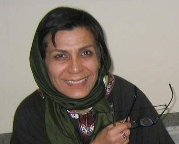

پذيرش > كوچه به كوچه > گزارشي از يك كارگاه خياباني: شب های مهتابی ، کمپین آفتابی / منصوره شجاعي


 گزارشي از يك كارگاه خياباني: شب های مهتابی ، کمپین آفتابی / منصوره شجاعي گزارشي از يك كارگاه خياباني: شب های مهتابی ، کمپین آفتابی / منصوره شجاعي
18 آذر 1385 - - نسخه قابل چاپ
اولین ماه های پاییزکه هوای ملس و شبهای مهتابی شوریده سران و سودادلان را بی مهابا به خویش می خواند ، هر آنچه که در نهان داری با عشق در طبق اخلاص می گذاری تا که شور وشیدایی ات را با دیگران تقسیم کنی و لذت دوچندان را هزاربار افزون کنی....
و اینگونه بود که این بارمهتاب را با رفقای کمپینی به استقبال برپایی کارگاه معرفی " کمپین تغییر برای برابری" رفتیم به شرط آنکه زیرهیچ سقفی جز آسمان نباشد و ماه به شهادت بیاید و زنان منطقه جنت آباد در پارک گلستان در کنارت باشند .
گفته بودند پس از دیدن سریال محبوب تلویزیونی اشا ن و صرف شام خانوادگی در پارک جمع می شوند گفته بودیم چه بهتر سرفرصت و بی دغدغه گپی میزنیم و مهتابی می بینیم و قراری برای دوستی ها و همکاری های بعدی .......
یکی یکی آمدند تا که شمارشان به 15 رسید ، آنکه هماهنگ کننده بود شرمنده می گفت بیشتر از اینها بودیم نمیدانم چرا نرسیدند ،...که کم کم می رسیدند .... زنانی با زنبیل خرید اجناس کوپنی که در غروب توزیع شده بود در دستهایشان و برخی با نایلون های خرید لباس و کفش و یکی دو نفری هم دوان دوان در پی کودکانی که کنجکاوتر از مادران خویش می آمدندهمه درکنارهم شرکت کنندگان این کارگاه خیابانی را تشکیل می دادند که با جدیت و مهر ازراه می رسیدتد تا که بر سر قرار حاضر شوند ......
سبدها را یکی یکی برزمین می گذاشتند و اطلاعات راجع به بقالی وسوپر نزدیک محله و تعاونی و شماره کوپن را تند تند ردوبدل می کردند و به همان تندی و عینیت نیز فورا به بچه های کمپین گوش سپاردند تا که بشنوند آنچه را که پیش از آن ، لااقل بدان تفصیل نشنیده بودند....
عده ای برروی نیمکت های تک و توک دوروبر ، عده ای برروی لبه جدول باغچه ها ، چند نفر ایستاده و دوسه نفر هم مدام در حرکت و به دنبال کودکان بازیگوششان که تاب شنیدن حرف هایی را نداشتند که حتی یک کلمه اش هم برایشان مفهوم نبود......
برخی که دفترچه ها را ازقبل خوانده بودند سوالاتی مطرح کردند که پاسخ به آنها برای دیگران نیز مفید بود و بقیه نیز کنجکاو دانستن باقی مطلب تقاضای دریافت دفترجه را داشتند.....
آموزشی غیر رسمی در فضایی غیر رسمی برای برقراری رسمی ترین قوانین جهان : قوانینی نوشته شده به دست توده های زنان و برای زنان!!
و بدینگونه بود که سنگینی زنبیل های خرید ، بی تابی بچه های کوچک ، نگرانی های روزمره خانگی ، سرمای زودرس پاییزی ، همه و همه درمقابل گرمای آفتاب امید به تغییر و تعدیل نابرابری ها رنگ می باخت .....
فضای متفاوت کارگاه خیابانی و گپ و گفت و درد دل جایی برای مونولوگ های تک محور باقی نمی گذاشت آنجه بود تعامل بود و انتقال تجربه . آگاهی از دانسته های یکدیگر. استحاله آموزشگر در آموزش گیرنده !
گفتیم و شنیدند ؛ گفتند وشنیدیم؛ یادگرفتیم و یاددادیم ؛ همدلی کردیم و دلگرم شدیم ؛ امیدوار برای دیدارها و برنامه های آینده قرارها را تنظیم می کردیم که ناگهان چندین موتورسوار دوروبر محوطه کوچک پارک مشغول ویراژشدند ........
ما که مار گزیده بودیم با دلهره نگاه کردیم و آنان که معصومانه به قانونمند بودن حرکت خویش اعتقاد داشتند بی تفاوت نگاهشان کردند . چرخش موتورها در اطراف پارک کم کم نگران کننده می شد . سابقه بد ذهنی ، مسئولیت ، نگرانی و علاقمندی به یکایک آنان سبب شد که به سرعت از یکدیگر خداحافظی کنیم و متفرق شویم. .....
دوستان نویافته امان به داخل خانه هایی برگشتند که از تلویزیون های روشنش هنوز سریال هایی پخش می شد که گاه با سخره گرفتن زنان و بی قیمت شمردن آنان ، سعی در جذب بیننده بیشتر داشت . و ما به خیابان هایی سرازیر شدیم که بی قانونی و خشونت به زنان بر سر چهارراه ها وایستگاه های تاکسی اش مانع از یافتن یک سواری بی دردسر حتی برای ما زنان نه چندان جوان می شد......
به خانه هایمان که رسیدیم سریال ها تمام شده بود اما بی قانونی و خشونت های خیابانی بی تردید هنوز ادامه داشت . اما این بار شوریده سرانی که آفتاب امید دلهای سودایی اشان را گرم کرده بود وتلالو صدف گون مهتاب دریا دریا امید را برایشان به تصویر کشیده بود تنها به یک چیز فکر می کردند : شبهای مهتابی در خدمت کمپین آفتابی!!
ارسال به
بالاترین
،
توییتر
،
فریندفید
،
فیسبوک
در همين بخش :
 روايت بيست و پنجمين شهريور / نرگس طیبات روايت بيست و پنجمين شهريور / نرگس طیبات
وقتی آتش خاموش شود/فرشته نوبخت
آن گاه که زن شدم / ویژه نامه 8 مارس 1391
چیزی زیر پوست این شهر می جوشد / دلارام علی
گرسنگی / وبلاگ سیب و سرگشتگی
ديگر بخش ها :
طرح یک میلیون امضا
|
مقالات
|
سایت نوشته ها
|
اخبار
|
گزارش كمپين
|
گفت و گو
|
علیه سکوت
|
كوچه به كوچه
|
نامه های شما
|
گزارش ویژه
|
گفتگو با اعضا
|
ویژه سالگرد کمپین
|
تصویر برابری
|
دل آرام علی
|
تریبون
|
مقالات
|
تاریخ شفاهی
|
خارج از چارچوب
|
کتابخانه
|
درباره کمپین
|
کمپین در شهرها
|
کمپین در بند
|
صدای تغییر
|
ویژه 22 خرداد
|
لایحه حمایت از خانواده
|
گالری
|
عشا مومنی
|
امیر یعقوبعلی
|
خدیجه مقدم
|
راحله عسگری زاده و نسیم خسروی
|
پروین اردلان،جلوه جواهری، مریم حسین خواه، ناهید کشاورز
|
زینب پیغمبرزاده
|
سعیده امین، سارا ایمانیان، محبوبه حسین زاده، ناهید کشاورز و همایون نامی
|
احترام شادفر
|
نسیم سرابندی زاده،فاطمه دهدشتی
|
وبلاگ مهمان
|
پرونده خرم آباد
|
دستگیری ها
|
مریم مالک
|
پرستو اللهیاری
|
مهرنوش اعتمادی
|
سمیه رشیدی
|
Other Languages
|
همراهان
|
«فراخوان کمپین ده روز با بهاره هدایت»
| English
|